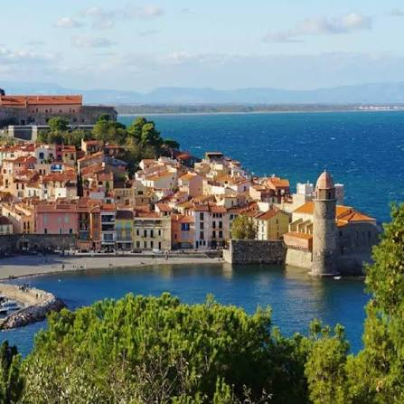

Côte
Vermeille


⟹ Littoral & Patrimoine Catalan ⟸
La Côte Vermeille désigne le littoral rocheux où l'extrémité orientale des Pyrénées vient s'abîmer dans la Méditerranée, d'Argelès et Collioure jusqu'à Cerbère et à la frontière espagnole. Falaises de schiste, caps, criques profondes et vallées étroites ont imposé depuis l'Antiquité une implantation humaine tournée à la fois vers la mer et vers les pentes cultivées. Sa couleur, changeante selon la lumière, a nourri l'image d'une côte « vermeille », rougeoyante au soleil.

Ce rivage appartient à l'ancienne Catalogne du Nord. Pendant des siècles, il relève des ensembles politiques catalans puis de la couronne d'Aragon et du royaume de Majorque. Ports, tours de guet et fortifications témoignent de sa position stratégique entre péninsule Ibérique et Languedoc. Le traité des Pyrénées de 1659 rattache le Roussillon à la France et transforme durablement la côte en espace frontalier.
Collioure, port ancien dominé par le Château royal, est l'un des grands verrous de ce littoral. Après 1659, Vauban remanie profondément ses défenses dans le cadre de la nouvelle frontière. La pêche — notamment celle de l'anchois —, la salaison, le cabotage et la viticulture structurent longtemps l'économie locale. Son clocher installé dans une ancienne tour maritime devient peu à peu l'image emblématique de la ville.
Port-Vendres possède une vocation portuaire très ancienne, traditionnellement rapprochée du Portus Veneris antique. Sa rade naturelle prend une importance croissante à l'époque moderne. Vauban envisage son rôle militaire, puis, au XVIIIe siècle, le maréchal de Mailly favorise de grands aménagements. Au XIXe siècle et au début du XXe, le port devient une porte maritime majeure vers l'Afrique du Nord : commerce, passagers, troupes et paquebots donnent à la ville un caractère cosmopolite.
Sur les pentes, les habitants construisent pendant des générations un extraordinaire paysage de vignes en terrasses, soutenues par des kilomètres de murettes de pierre sèche et drainées par des rigoles. Banyuls et Collioure deviennent indissociables de cette viticulture héroïque. Le relief interdit la mécanisation facile : le vignoble est façonné à la main, parcelle après parcelle, et constitue autant un patrimoine culturel qu'agricole.
Banyuls-sur-Mer ajoute à cette histoire viticole une dimension scientifique majeure. Le zoologiste Henri de Lacaze-Duthiers choisit le site pour y créer une station marine : fondé en 1881, le Laboratoire Arago ouvre en 1882. Il réunit laboratoires, bibliothèque et moyens d'étude en mer ; un aquarium public ouvre peu après. Cette implantation fait de Banyuls l'un des berceaux français de la biologie et de l'océanographie marines.
Au début du XXe siècle, la lumière de Collioure bouleverse aussi l'histoire de l'art. Durant l'été 1905, Henri Matisse et André Derain travaillent dans le port et ses environs. Leurs couleurs pures et violemment contrastées participent à la naissance du fauvisme. Dès lors, peintres et artistes affluent sur la côte ; Collioure devient l'un des hauts lieux de la modernité picturale méditerranéenne.
Le XXe siècle est également marqué par les guerres, la frontière et les exils. En 1939, la Retirada jette sur les routes des centaines de milliers de républicains espagnols ; le Roussillon et son littoral deviennent un espace de passage, d'internement et de mémoire. Pendant la Seconde Guerre mondiale, la côte est fortifiée et surveillée en raison de sa situation frontalière et maritime.
Après-guerre, tourisme, plaisance et résidences secondaires transforment les villages, mais le relief protège la Côte Vermeille d'une urbanisation continue comparable à celle de la plaine littorale. Parallèlement naît une conscience écologique précoce : la dégradation des fonds marins conduit à la création, en 1974, de la réserve naturelle marine de Cerbère-Banyuls, première réserve strictement marine de France métropolitaine.
Aujourd'hui, la Côte Vermeille superpose ainsi plusieurs patrimoines : frontière historique, architecture militaire, ports de pêche et de commerce, vignoble en terrasses, science marine, mémoire artistique et espaces naturels protégés. Collioure, Port-Vendres, Banyuls-sur-Mer et Cerbère ne forment pas une simple succession de stations littorales : ils racontent, chacun à leur manière, la rencontre séculaire des Pyrénées, de la Catalogne et de la Méditerranée.
Sources documentaires : Observatoire océanologique de Banyuls — histoire du Laboratoire Arago ; Ville de Port-Vendres — patrimoine ; Département des Pyrénées-Orientales — réserve marine.
La Côte Vermeille doit son visage à des générations de vignerons qui ont conquis la pente en édifiant des milliers de kilomètres de murets en pierre sèche, créant les fameuses "feixes" ou terrasses. Ce travail titanesque permet de cultiver la vigne sur des pentes autrement inexploitables, jusqu'à parfois plus de 50 % d'inclinaison.
La tramontane, vent du nord-ouest, joue ici un rôle écologique essentiel : elle assainit l'air, limite l'humidité et donc les maladies de la vigne, mais impose aussi sa loi aux paysages, aux toitures et aux arbres, souvent inclinés dans le sens du vent.
Entre les parcelles cultivées subsistent des poches de garrigue et de maquis méditerranéen, refuges pour une faune et une flore adaptées à la sécheresse et au vent, tandis que les murets de pierre sèche abritent lézards, insectes et une flore rupicole spécifique.
Déprise viticole : l'entretien des terrasses en pierre sèche est très coûteux en travail, et l'abandon de certaines parcelles fragilise murets et sols face à l'érosion.
Pression touristique : l'afflux estival concentré sur quelques villages met sous tension le stationnement, l'accès à l'eau et les espaces naturels du littoral.
Risque incendie : la garrigue sèche et la tramontane créent des conditions propices aux départs de feu en période estivale.
Érosion côtière : les tempêtes méditerranéennes fragilisent régulièrement le sentier du littoral et certaines infrastructures portuaires.
Le Château Royal de Collioure et le clocher de Notre-Dame-des-Anges, à visiter tôt le matin pour profiter de la lumière et éviter l'affluence.
Le sentier du littoral entre Collioure, Port-Vendres et Banyuls, praticable à pied sur plusieurs heures, avec de nombreuses criques pour se baigner en chemin.
Les caveaux de Banyuls et Collioure pour déguster le vin doux naturel et les vins secs de la Côte Vermeille directement chez les vignerons.
Le marché et les quais de Port-Vendres pour observer le retour de la pêche et goûter aux produits locaux, notamment l'anchois de Collioure.